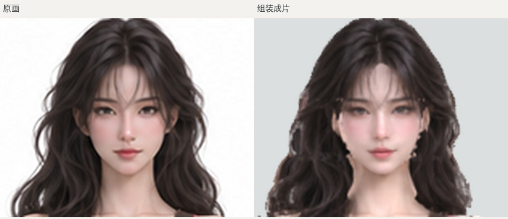
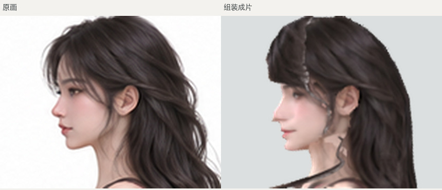
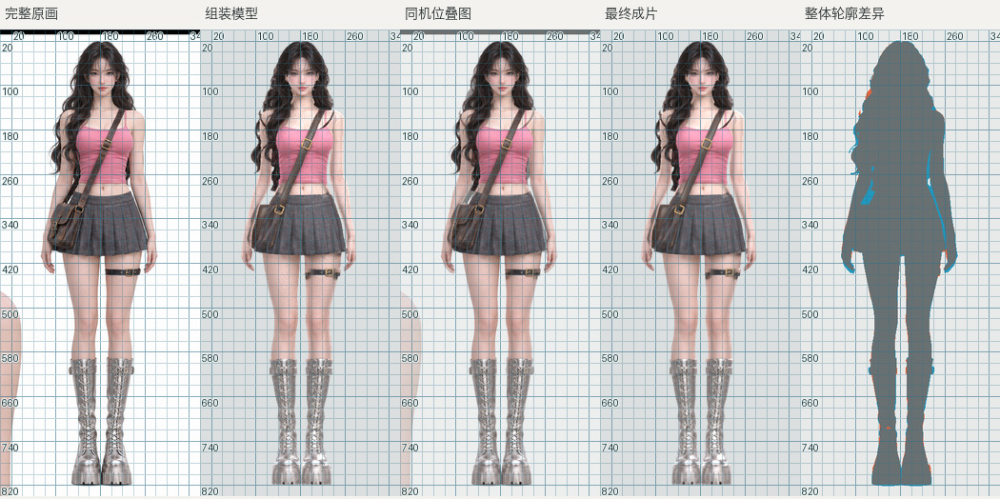
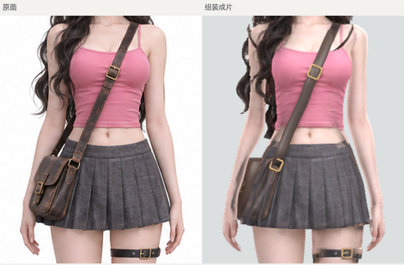
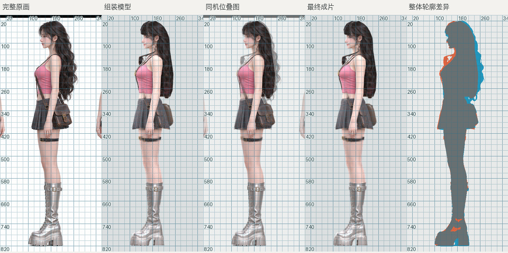
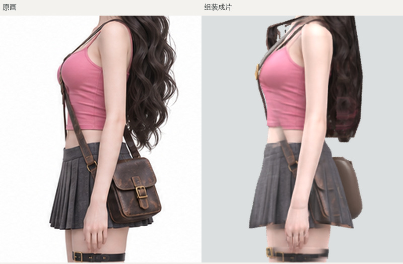
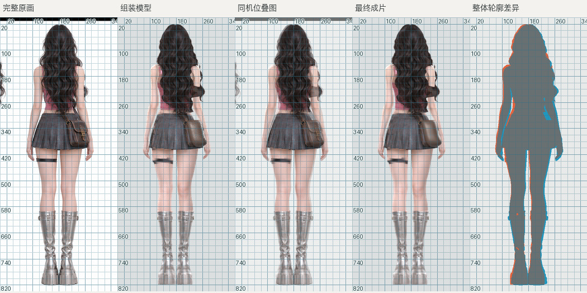
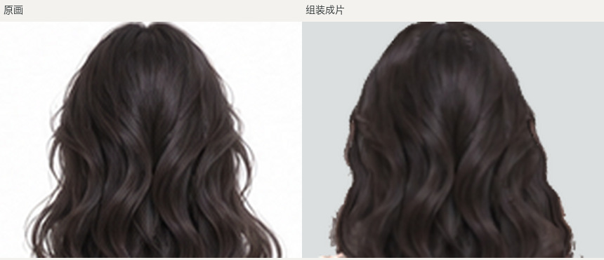
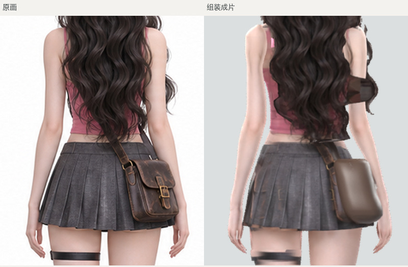

整体与逐件网格对照
蓝色为原画有而模型缺少的区域，橙色为模型多出的区域。灰色为重合，灰紫色为排除区。网格标注采用该栏原画的像素坐标，偏移为模型减原画，向右、向下为正。
逐段边界图中，白线连接模型边与原画目标，蓝圈标目标。红色表示搜索内缺边，紫色表示有多个候选，灰色表示画幅或遮挡证据不足。
完整测量记录
高精度对照 有部位需返修
本次覆盖 3/3 栏、3/3 件。已核对 0 项。
需返修 16 项 front 整体轮廓、front 可见发层、front 头脸与颈部、front 鞋履与鞋底、front 眉眼鼻唇、side 整体轮廓、side 可见发层、side 头脸与颈部、side 鞋履与鞋底、side 额鼻唇颏、back 整体轮廓、back 可见发层、back 头脸与颈部、back 鞋履与鞋底、back 后脑与领口、头脸与颈部多视图面部核对
待核对 3 项 front 吊带、斜挎包与铜扣、side 吊带、斜挎包与铜扣、back 吊带、斜挎包与铜扣
头脸与颈部 · 面部多视图
侧向机位符合配置，绕头部上下轴的夹角 +90.0°，侧面仰俯 -0.0°
正面 需返修
原图裁框 158 × 124 px

同位置细网格 左外眼角 偏差最大，0.44 px，修向原画 (+0.2, +0.4) px侧面 需返修
原图裁框 158 × 124 px

同位置细网格 鼻尖 偏差最大，4.12 px，修向原画 (+1.0, -4.0) px仍需处理的局部
front

需返修 原尺寸叠图 整体逐段边界定位轮廓交并比 0.961，缺少 2991 px²，多出 751 px²
包围框左、上、右、下偏移 +0 / +1 / -2 / -3 px
原画沿法线找模型 最大 16.12 px，P95 4.00 px，匹配 3238/3490，搜索内缺边 119，多解 90，画幅不足 43
模型沿法线找原画 最大 12.39 px，P95 3.29 px，匹配 3236/4022，搜索内缺边 686，多解 100，画幅不足 0
最大可定位偏差处，模型 (171.1, 717.5) 向原画位移 (-16.1, +0.0) px造型与神态 需返修
眉眼鼻唇 需返修 长卷发分缝及唇形清楚，眼睑比原图柔。对照标点 1 右外眼角 2 左外眼角 3 鼻尖 4 唇缝 5 颏点

吊带、斜挎包与铜扣 待核对 分件
- 可见发层 需返修 整幅网格 · 局部网格 · 穿戴与遮挡 · 逐段边界定位
轮廓交并比 0.838，缺少 395 px²，多出 1574 px²
包围框左、上、右、下偏移 +0 / +0 / -2 / +21 px
原画沿法线找模型 最大 17.96 px，P95 9.56 px，匹配 1345/1888，搜索内缺边 138，多解 405，画幅不足 0
模型沿法线找原画 最大 17.88 px，P95 7.63 px，匹配 1127/1884，搜索内缺边 215，多解 542，画幅不足 0
最大可定位偏差处，模型 (131.6, 143.9) 向原画位移 (-14.7, -10.4) px
- 头脸与颈部 需返修 整幅网格 · 局部网格 · 穿戴与遮挡 · 逐段边界定位
轮廓交并比 0.664，缺少 1040 px²，多出 191 px²
包围框左、上、右、下偏移 +41 / +16 / -26 / -11 px
原画沿法线找模型 最大 18.00 px，P95 16.51 px，匹配 219/918，搜索内缺边 642，多解 57，画幅不足 0
模型沿法线找原画 最大 17.90 px，P95 16.01 px，匹配 292/374，搜索内缺边 57，多解 25，画幅不足 0
最大可定位偏差处，模型 (191.5, 117.0) 向原画位移 (+0.0, +18.0) px
- 鞋履与鞋底 需返修 整幅网格 · 局部网格 · 穿戴与遮挡 · 逐段边界定位
轮廓交并比 0.938，缺少 824 px²，多出 326 px²
包围框左、上、右、下偏移 +2 / +2 / -3 / -3 px
原画沿法线找模型 最大 16.12 px，P95 2.68 px，匹配 1159/1232，搜索内缺边 25，多解 5，画幅不足 43
模型沿法线找原画 最大 9.97 px，P95 2.88 px，匹配 1180/1234，搜索内缺边 46，多解 8，画幅不足 0
最大可定位偏差处，模型 (171.1, 717.5) 向原画位移 (-16.1, +0.0) px
side

需返修 原尺寸叠图 整体逐段边界定位轮廓交并比 0.896，缺少 5102 px²，多出 2565 px²
包围框左、上、右、下偏移 +1 / +1 / -21 / -3 px
原画沿法线找模型 最大 18.00 px，P95 12.50 px，匹配 2198/2790，搜索内缺边 490，多解 59，画幅不足 43
模型沿法线找原画 最大 17.98 px，P95 11.56 px，匹配 2241/2634，搜索内缺边 335，多解 58，画幅不足 0
最大可定位偏差处，模型 (248.0, 161.5) 向原画位移 (+18.0, +0.0) px造型与神态 需返修
额鼻唇颏 需返修 耳廓、下颌和长卷发可辨，鬓发遮光偏重。对照标点 1 鼻尖 2 唇缘 3 颏前

吊带、斜挎包与铜扣 待核对 分件
- 可见发层 需返修 整幅网格 · 局部网格 · 穿戴与遮挡 · 逐段边界定位
轮廓交并比 0.740，缺少 3043 px²，多出 1374 px²
包围框左、上、右、下偏移 -7 / +0 / -19 / +0 px
原画沿法线找模型 最大 18.00 px，P95 15.00 px，匹配 922/1420，搜索内缺边 232，多解 266，画幅不足 0
模型沿法线找原画 最大 17.97 px，P95 15.71 px，匹配 1060/1524，搜索内缺边 233，多解 231，画幅不足 0
最大可定位偏差处，模型 (246.0, 148.5) 向原画位移 (+18.0, +0.0) px
- 头脸与颈部 需返修 整幅网格 · 局部网格 · 穿戴与遮挡 · 逐段边界定位
轮廓交并比 0.652，缺少 881 px²，多出 113 px²
包围框左、上、右、下偏移 +5 / +37 / -49 / -13 px
原画沿法线找模型 最大 17.88 px，P95 13.55 px，匹配 213/620，搜索内缺边 287，多解 120，画幅不足 0
模型沿法线找原画 最大 17.29 px，P95 16.26 px，匹配 322/486，搜索内缺边 67，多解 97，画幅不足 0
最大可定位偏差处，模型 (149.5, 70.9) 向原画位移 (+0.0, -17.9) px
- 鞋履与鞋底 需返修 整幅网格 · 局部网格 · 穿戴与遮挡 · 逐段边界定位
轮廓交并比 0.897，缺少 800 px²，多出 803 px²
包围框左、上、右、下偏移 +1 / -2 / -1 / -3 px
原画沿法线找模型 最大 17.75 px，P95 3.98 px，匹配 746/1008，搜索内缺边 216，多解 3，画幅不足 43
模型沿法线找原画 最大 12.18 px，P95 3.16 px，匹配 742/800，搜索内缺边 46，多解 12，画幅不足 0
最大可定位偏差处，模型 (171.5, 802.2) 向原画位移 (+0.0, +17.8) px
back

需返修 原尺寸叠图 整体逐段边界定位轮廓交并比 0.904，缺少 5813 px²，多出 3612 px²
包围框左、上、右、下偏移 -3 / -1 / -1 / -3 px
原画沿法线找模型 最大 17.38 px，P95 7.22 px，匹配 3316/3598，搜索内缺边 121，多解 129，画幅不足 32
模型沿法线找原画 最大 17.87 px，P95 6.66 px，匹配 3485/4038，搜索内缺边 492，多解 61，画幅不足 0
最大可定位偏差处，模型 (100.3, 378.5) 向原画位移 (-16.3, -7.3) px造型与神态 需返修

后脑与领口 需返修 卷发覆盖后背，发梢在斜挎包上方的蓬松程度有偏差。
吊带、斜挎包与铜扣 待核对 分件
- 可见发层 需返修 整幅网格 · 局部网格 · 穿戴与遮挡 · 逐段边界定位
轮廓交并比 0.852，缺少 948 px²，多出 3014 px²
包围框左、上、右、下偏移 -3 / -1 / -1 / +2 px
原画沿法线找模型 最大 17.88 px，P95 15.52 px，匹配 1213/1824，搜索内缺边 515，多解 96，画幅不足 0
模型沿法线找原画 最大 18.00 px，P95 11.68 px，匹配 781/1266，搜索内缺边 239，多解 246，画幅不足 0
最大可定位偏差处，模型 (255.0, 199.5) 向原画位移 (-18.0, +0.0) px
- 头脸与颈部 需返修 整幅网格 · 局部网格 · 穿戴与遮挡 · 逐段边界定位
轮廓交并比 0.000，缺少 256 px²，多出 0 px²
原画沿法线找模型 无确定对应，匹配 0/532，搜索内缺边 532，多解 0，画幅不足 0
模型沿法线找原画 无确定对应，匹配 0/0，搜索内缺边 0，多解 0，画幅不足 0
- 鞋履与鞋底 需返修 整幅网格 · 局部网格 · 穿戴与遮挡 · 逐段边界定位
轮廓交并比 0.863，缺少 1931 px²，多出 752 px²
包围框左、上、右、下偏移 +4 / +1 / -6 / -3 px
原画沿法线找模型 最大 17.06 px，P95 7.33 px，匹配 1173/1272，搜索内缺边 60，多解 7，画幅不足 32
模型沿法线找原画 最大 15.30 px，P95 6.03 px，匹配 1156/1242，搜索内缺边 67，多解 19，画幅不足 0
最大可定位偏差处，模型 (138.9, 721.3) 向原画位移 (+7.6, -15.3) px